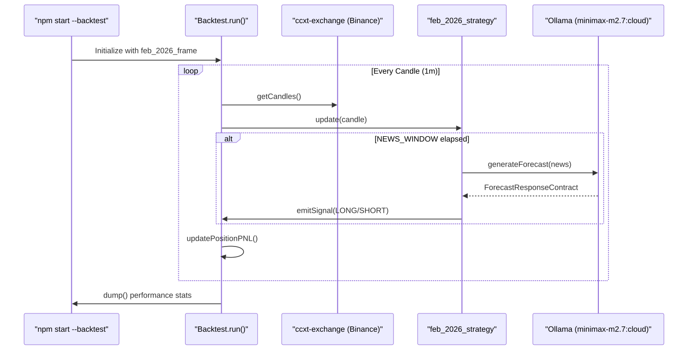

This page analyzes the documented backtest results for the feb_2026_strategy during February 2026. The study evaluates the performance of the AI-driven sentiment engine in a high-volatility bear market characterized by significant macroeconomic shifts and geopolitical escalation.
The February 2026 period served as a stress test for the news-sentiment-ai-trader. During this month, Bitcoin (BTC) experienced a net move of −16.4%, falling from a monthly high of ~$79,424 to a low of ~$60,000. The strategy utilized the feb_2026_frame to define the temporal window and the ccxt-exchange adapter for market data.
| Metric | Value |
|---|---|
| Total Trades | 16 |
| Net PNL | +16.99% |
| Win Rate | 68.8% (11 / 16) |
| Profit Factor | 2.25 |
| Directional Bias | 14 SHORT / 2 LONG |
| Max Drawdown (Trade-to-Trade) | -5.98% (Late month) |
The backtest execution follows a structured pipeline where news data is retrieved, processed by the LLM, and converted into actionable trading signals.
The feb_2026_strategy processes news every 24 hours (the NEWS_WINDOW) to prevent over-trading. It maps LLM sentiment labels to position directions:
The following diagram illustrates how the system transitions from "Natural Language Space" (News/Reasoning) to "Code Entity Space" (Signals/Positions).
Diagram: News-to-Execution Pipeline

The strategy's success was largely due to its ability to identify and maintain a SHORT bias during several high-impact fundamental shifts:
The performance calculation uses a non-compounding model.
The strategy utilized three primary exit mechanisms to manage risk and lock in profits.
| Exit Type | Count | Description |
|---|---|---|
| Trailing Take-Profit | 9 | Triggered when price retraced from peak after hitting profit thresholds. |
| Stop-Loss | 4 | Hard exit at 3.0% - 3.4% to protect capital. |
| Sentiment Flip | 3 | Immediate closure when the LLM produced a forecast opposing the current position. |
The backtest is executed via the Backtest.run() engine within the backtest-kit framework.
Diagram: Backtest Execution Components

To replicate these results, the system must be executed with the specific strategy and frame configuration:
npm start -- --backtest --symbol BTCUSDT \
--strategy feb_2026_strategy \
--exchange ccxt-exchange \
--frame feb_2026_frame \
./content/feb_2026.strategy/feb_2026.strategy.ts